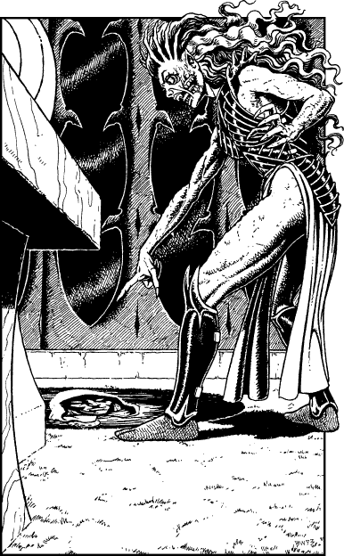

243
In unison, the robed figures levitate several paces from the floor so that they are able to rest the pillow and phial upon the surface of the great marble table. Then silently they lower themselves back to the ground where they wait patiently for the Demoness to stir from her slumber. After several minutes she raises her head and you are shocked to see that her womanly face is hideously scarred and disfigured.

‘Ah, my lieutenants,’ she says, yawning and stretching her arms wide, ‘I see your work is complete. By Naar, I hunger for revenge upon Avarvae! I trust your elixir will make her pay for the torment she has wrought me.’
‘All is ready, supreme mistress,’ reply the robed ones, sycophantically. Clearly their answer pleases the Demoness. Her ruined face twists into the semblance of a smile as she picks up the phial and examines it closely. The glass bottle looks especially fragile and tiny as she holds it between her gigantic index finger and thumb.
‘Excellent!’ she murmurs. ‘Soon she shall pay for what she did to me.’
The Demoness Shamath rises from her throne and turns towards the seething pool of black fluid which is set into the floor close by. The shimmering waters grow calm and you see her scarred reflection in the pool. Then the fluids seethe afresh and her image swirls and changes. When it reforms you see, to your horror, that the reflection is no longer that of the Demoness. The face staring back from the surface of the pool is yours!
‘Ayeeeeeee!’ howls Shamath. ‘It is Lone Wolf! The Kai Lord is here!’
If you have ever encountered Demoness Shamath in a previous Lone Wolf adventure, turn to 22.
If you have never encountered this being before, turn to 227.